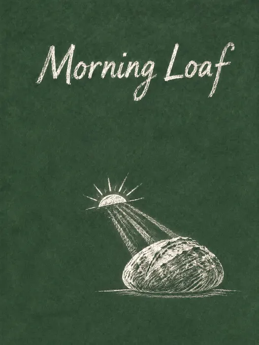
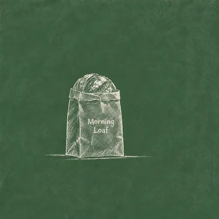
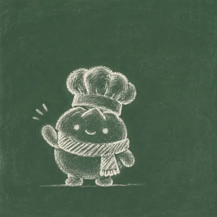
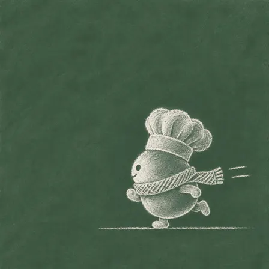
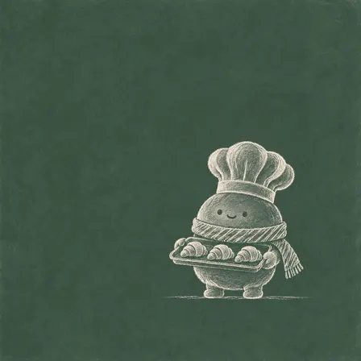
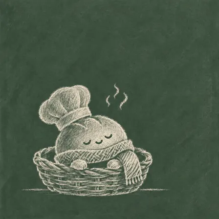

CaliCastle/skills: image test, 2026-11-08
The same brief for every skill: a 3:4 poster for a made-up bakery with six exact lines of English and Chinese text, a square photo of a kraft-paper bag printed with the shop's name, and four square pictures of one mascot in four poses. Claude Code (Claude Opus 5.5) made them with the skill in a throwaway sandbox; every image call went to the newest model of the family the skill asked for (GPT Image 2.6, Nano Banana 2.1 or FLUX 3). 8.1 minutes; 15 image calls ($0.128), drawn by gpt-image-2.6-ext. All results · The brief · How it is scored
A chalkboard look; the poster carries the shop name and none of the other five lines.
Result
Broke a rule · a look of its own
- 1 of 6 poster lines right
- the mascots less alike (judge 4/5)
The pictures












The text, read letter by letter
Read by OCR (macOS Vision, five passes); a line OCR could not find as written was looked at by hand.
| Asked for | Written |
|---|---|
| Morning Loaf | right |
| Grand opening · Saturday 9 am | wrong |
| 晨光面包 · 周六上午九点开业 | wrong |
| Sourdough £4.50 · Croissant £2.20 | wrong |
| 12 Elm Street, Bristol | wrong |
| 前一百位顾客送一个可颂 | wrong |
| Morning Loaf (on the bag) | right |
The mascots (judged by a vision model)
| Same character in all four (1-5) | 4 |
|---|---|
| Poses as asked (of 4) | 4 |
| Chef's hat and red scarf in all four | yes |
| Text on them | no |
The judge's note: All four clearly depict the same round bun with matching face, chef hat, scarf, and body shape; the monochrome style prevents verifying the specified white and red colours.
How it went (the session's closing message)
I made all six pictures with the **Chalk Logic** skill and saved them to `~/work/output/` under the brief's names. Four are finished: `poster.png`, `product.png`, `mascot-2.png` and `mascot-3.png`. Two still have problems the skill's checks found: `mascot-1.png` and `mascot-4.png`. **What the skill could not meet:** it only draws in white chalk on a green chalkboard and allows at most six words of text, so the poster shows only "Morning Loaf" (the other five lines, including the Chinese, prices and address, are left out). It also means no warm morning colours, no kraft-brown bag or dark-brown lettering, no grey studio background, and no red scarf or white-vs-bread colouring on Bun. Two skills were installed from `~/src`. I used Chalk Logic rather than Signal Geometry, which only makes abstract shapes and can't draw a loaf or a mascot. The skill expects a built-in image tool, so I ran its prompts through OpenAI's image API. Images were generated with `images.generate` and the skill's repairs were applied with `images.edit`, two passes at most per image. A separate subagent then checked every picture against the skill's gates. **How each one ended up:** - **`poster.png`** (3:4): a loaf lit by a low chalk sun, with "Morning Loaf" lettered at the top. It needed two repairs: I shrank the loaf to leave more empty board, then removed a gold tint so it is chalk-white only. - **`product.png`** (1:1): an upright paper bag with a sourdough loaf showing at the top and "Morning Loaf" on the front. I shrank the bag, then redrew the name in chalk lettering instead of a clean typeface. The shading on the bag still looks somewhat digital rather than chalky. - **`mascot-1.png`**: Bun from the front, waving. It looked fine on my check and was not repaired, but it doesn't match the other three: Bun's eyes and smile are white here and dark in the others. - **`mascot-2.png`**: Bun in true side view, running to the left. The first version was a three-quarter view with speed lines nearly touching the edge, so I fixed both. - **`mascot-3.png`**: Bun carrying a tray of exactly three croissants. I shrank it once to leave more empty board. - **`mascot-4.png`**: Bun asleep in a wicker basket. I fixed the number of breathing curls to three. My second fix, to make the mouth distinct from the closed eyes, did not change the image, and that was the last allowed pass. It also has slightly too little empty board and a heavy, digital-looking fill. **Same character across the four mascots:** all share the round bun body, puffy chef's hat and hatched scarf. Besides the eye colour in mascot-1, the scarf pattern (stripes vs crosshatch), the scoring on top of the bun and the number of puffs on the hat vary from picture to picture. The prompts are in `~/work/gen/prompts/`, and the earlier versions are in `~/work/gen/`. DELIVERABLE: ~/work/output/